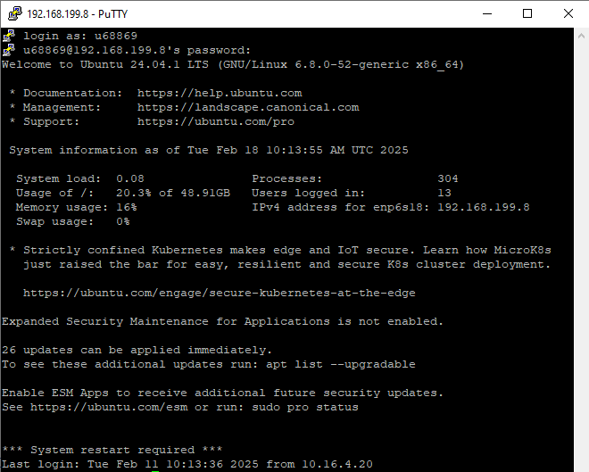

Вход
Получение IP-адреса c помощью команды ping. Команда ping используется для проверки доступности удалённого хоста или IP-адреса в сети. После ввода команды, мы видим результаты, которые показывают, отправляются ли пакеты на указанный адрес и есть ли ответ. Результаты будут содержать время отклика и количество потерянных пакетов.
Команда nslookup используется для получения информации о DNS-записях и проверки, как доменные имена соответствуют IP-адресам. После выполнения команды мы видим результаты, включая IP-адреса, соответствующие указанному доменному имени, а также информацию о DNS-серверах.


Команда whois используется для получения информации о зарегистрированных доменах, включая данные о владельцах и другие детали, связанных с доменным именем или IP-адресом. После выполнения команды мы видим результаты запроса, включая такие данные, как: - Дата регистрации и окончания действия домена - Информация о регистраторе - DNS-серверы, связанные с доменом - Статус домена
Filezilla